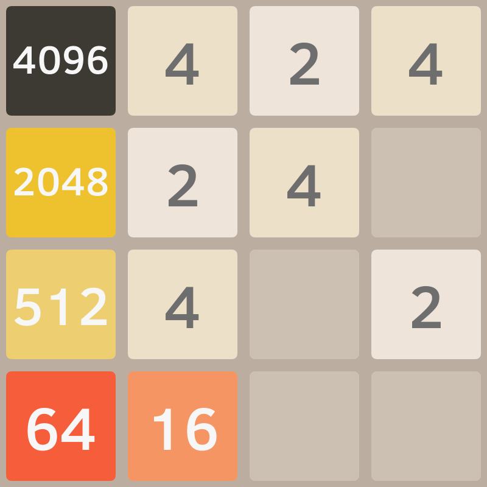
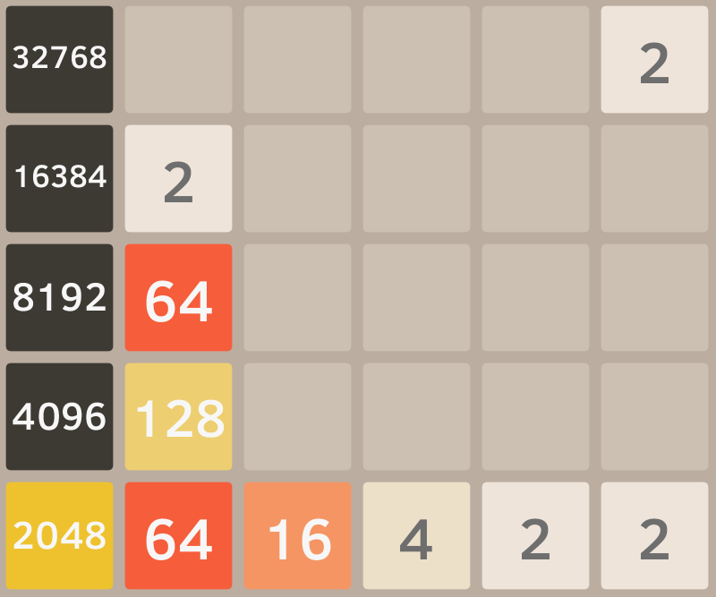
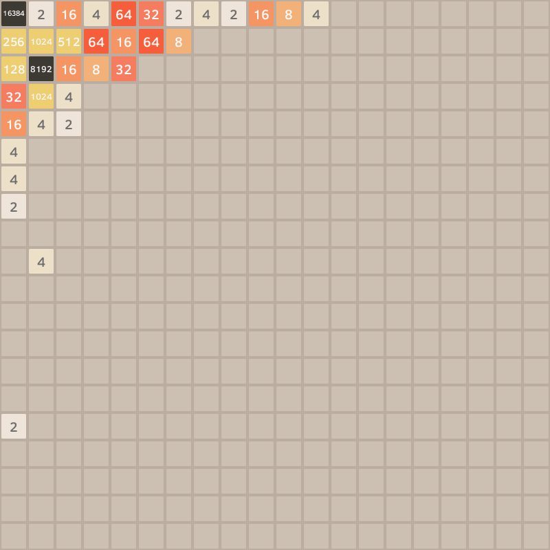

2048 AI
Overview
This program is a recreation of the game 2048 with a custom AI programmed to play the game. The game has also been modified to allow for any size of rectangular board. The AI is a combination of a monte carlo and heuristic AI. The AI is consistently able to reach the 2048 tile thus "winning" the game.
Inspiration
This was inspired by an earlier project I did involving a Tetris AI. I wanted to try to apply some of the same logic I used for making the Tetris AI towards solving 2048. Unfortunately this did not work nearly as well as I had hoped for and so I decided I needed a new approach. I was inspired by an AI I found online for 2048 created by Ronen Zilberman here. Not wanting to just make a straight recreation of his work I decided to try something new and see if I could create a new type of hybrid AI.
The AI
The AI is an interesting hybrid between a Monte Carlo tree search and a heuristic AI. Monte Carlo based AI are extremely good at getting out of difficult situations in the short term but bad at long term planning. Heuristic based AI is the opposite being really good at long term strategy but really bad at getting out of sticky situations. I came up with a hybrid AI which is able to get the best of both worlds by cleverly combining these two different types of AI.
Monte Carlo AI
Monte Carlo based AI work by randomly simulating different possible outcomes that are likely to result from a given move and then comparing the averages for each move to make a guess which move is the best move. The AI has no idea why a move is better or worse, all it sees is that making a certain move is likely to end badly for it. Unfortunately the further in the future the AI looks the less accurately it is able to predict the outcomes without exponentially more computational power. Thus it can know the best possible move to make within the next few turns but it is impossible for it to guess what will happen beyond the few turns it is able to see in the future.
Heuristic AI
Heuristic based AI work by following sets of rules that are preprogrammed. Generally a heuristic AI will have a set of rules for how to score a certain game state and then works by comparing the scores that result from making different moves and picking the move that results in the highest score. This AI only looks at scores which makes it very good at following specific strategies. However when it reaches trouble or situations that it's rules are not able to handle it has no way to adapt to the situation and will almost always fail.
My Hybrid AI
The AI I came up with uses a set of "subBots" which are basically greedy heuristic AIs that will follow their heuristics with no consideration for the future. The AI runs hundreds of simulations with these subBots and then scores the final game state each one ends on. It then will use this information to predict which move will result in the highest long term heuristic score. By using the idea of running many simulations from Monte Carlo based AI and the idea of having scoring handled by heuristics the hybrid AI is able to be good at both short term and long term planning.
Discoveries
While creating the AI for this project I came across some interesting problems and interesting behaviours.
Self-sabotage
The hybrid AI uses heuristic scoring both in the final evaluation of the subBots and by the subBots themselves while they are making greedy decisions. I discovered that both places where heuristic scoring is used must be based off the same heuristics. In fact when the heuristics are not the same it often leads to the AI making purposely bad moves to sabotage itself. This happens because there is an internal conflict within the AI and thus it can occasionally enter a weird kind of competition with itself. This has some very interesting implications towards the nature of self-sabotage which may apply to more than just AI.
Variable Foresight
The more moves that the AI is allowed to look into the future the better it is able to play but the slower it will run as it must run more possible simulations. Early on in the game it is not very difficult and thus moves do not need to be thought through as much. By varying the foresight overtime to allow the bot to see further into the future the further into the game the AI gets the start of the game can be spend up significantly with very little effect on the final score the AI is able to reach.
Results
Below are a few examples of different games being played by the AI on different board sizes.
  